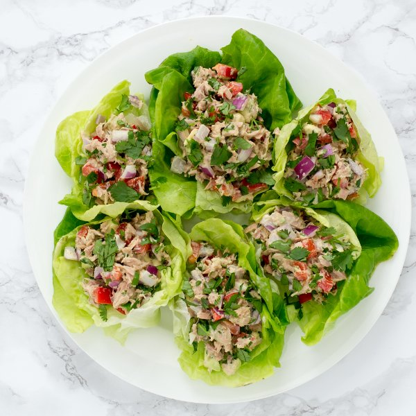

Tuna Salad Lettuce Wraps with Avocado & Bell Pepper

Nutrition (per serving)
467.2 kcalCalories
28.3 gProtein
19.2 gCarbs
33.4 gFat
Full nutrition table
| Calories | 467.2 kcal |
| Total fat | 33.4 g |
| Saturated fat | 5.2 g |
| Trans fat | 0.1 g |
| Cholesterol | 56.7 mg |
| Sodium | 366.4 mg |
| Carbohydrates | 19.2 g |
| Fiber | 10.2 g |
| Sugars | 5.9 g |
| Protein | 28.3 g |
| Potassium | 1191.6 mg |
| Calcium | 92.8 mg |
| Iron | 4.4 mg |
| Vitamin A | 281.3 IU |
| Vitamin C | 100.7 mg |
| Vitamin D | 59.1 IU |
Cookware
Ingredients
- 2avocados
- 2 headsbutter (Boston) lettuce
- 4 (6 oz) canschunk light tuna in water
- 1 small bunchcilantro
- 1lime
- 2red bell peppers
- 1 mediumred onion
- black pepper
- cayenne pepper
- Dijon mustard
- mayonnaise
- salt
Steps
- Separate the lettuce into leaves; wash and spin dry in a salad spinner. Alternatively, wash in a colander, then transfer to a clean towel and pat dry. Set aside.2 heads butter (Boston) lettuce
- Wash and dry the the remaining fresh produce.2 red bell peppers
2 avocados
1 lime
1 small bunch cilantro - Drain the tuna and transfer to a large salad bowl; flake with a fork.4 (6 oz) cans chunk light tuna in water
- Quarter the bell peppers lengthwise; remove and discard the stem, seeds, and membranes. Small dice the peppers (cut into ¼-inch cubes) and add to the salad bowl.
- Halve the avocados lengthwise and twist the halves to separate, then remove the pit with a knife or spoon; scoop out and small dice the flesh (cut into ¼-inch cubes). Add to the salad bowl.
- Using a knife, shave the cilantro leaves off the stems at a downward angle, working away from your body; discard the stems and finely chop the leaves. Add about ¾ of the cilantro to the salad bowl and save the rest for garnishing.
- Trim off and discard the ends of the onion and remove the outer layer; small dice the onion (cut into ¼-inch pieces). Add to the salad bowl.1 medium red onion
- Juice the lime and add to the salad bowl.
- Add mayonnaise, Dijon, salt, black pepper, and cayenne pepper to the salad bowl; mix the salad until thoroughly coated in the dressing.6 tbsp mayonnaise
1 tbsp Dijon mustard
1 tsp salt
½ tsp black pepper
⅛ tsp cayenne pepper - To serve, make the lettuce wraps by spooning the tuna salad into the doubled up lettuce leaves, then garnishing with the remaining cilantro. Enjoy!